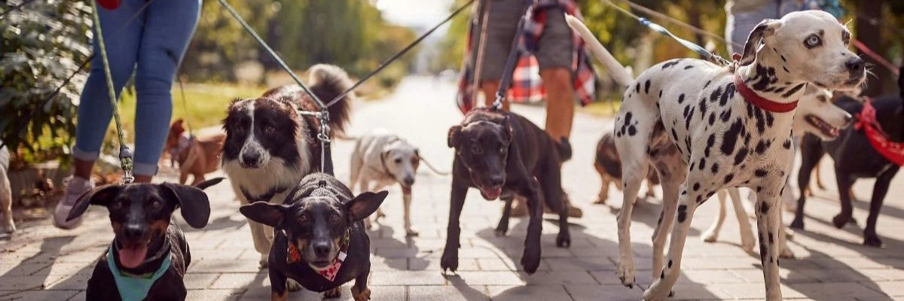
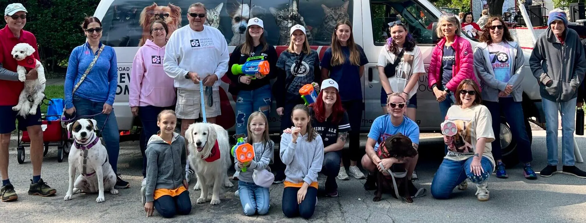
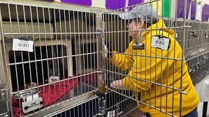
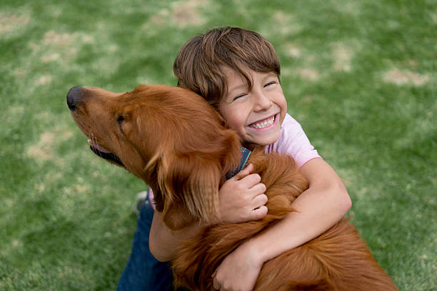
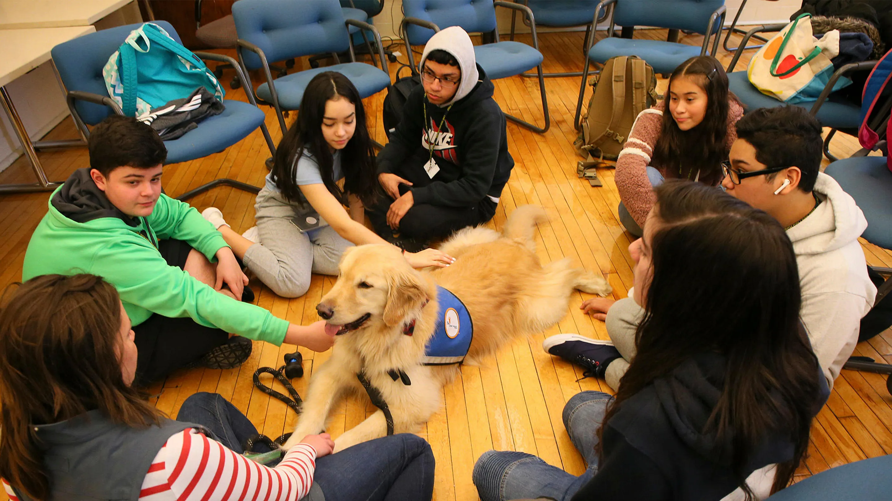

Volunteer and Foster with Us
Join our team of dedicated volunteers and help make a difference in the lives of our furry friends. Whether you can spare a few hours a week or are looking to foster a pet in need, we welcome your support at all of our locations!

Volunteer Opportunities
As a volunteer, you can assist with various tasks such as dog walking, socializing with the animals, helping with events, and providing support to our staff. Your time and effort will directly contribute to the well-being of our pets and the success of our organization.
- Adults
- Youth
- Foster
- Groups
About Volunteering
Volunteering with us provides a rewarding experience where you can make a tangible difference in the lives of animals and the community. Our volunteers play a crucial role in supporting our mission and ensuring the well-being of our pets. Our volunteers are provided with training, support, and opportunities to grow their skills while making a positive impact. Additionally, groups volunteering at our shelter will be treated to light refreshments throughout their visit. We encourage everyone to get involved and experience the joy of helping our furry friends.

Adult Volunteer Opportunities
Our adult volunteers are the backbone of our organization, providing essential support in various roles. From dog walking and socializing with the animals to assisting with events and administrative tasks, our adult volunteers play a crucial role in ensuring the well-being of our pets and the success of our organization. We offer flexible scheduling to accommodate different availability, and we provide training and support to help you make the most of your volunteer experience. Join us in making a difference in the lives of our furry friends!
We are currently seeking individuals to aid in our administration and operations. From finance, business, Human Resources, and marketing we want your skills on our team.
Additionally, we are searching for volunteers to clean kennels and assist with other maintenance tasks to ensure a safe and comfortable environment for our animals. Groundskeeping and facility maintenance are essential to providing a welcoming and safe space for both our pets and visitors.

Sign Up Here!Youth Volunteer Opportunities
We welcome youth volunteers who are passionate about helping animals and making a positive impact in their community. Youth volunteers can assist with various tasks such as dog walking, socializing with the animals, helping with events, and providing support to our staff. Volunteering with us provides a rewarding experience where young individuals can learn valuable skills, gain experience working with animals, and make a tangible difference in the lives of our furry friends. We provide training and support to ensure a safe and enjoyable volunteer experience for all youth volunteers. Parental permission is required for all youth volunteers under 18. Join us in making a difference in the lives of our pets and the community!

Sign Up Here!Foster Opportunities
Foster volunteers provide temporary homes for animals in need, helping them transition from the shelter to a permanent home. This role is crucial for animals that require special care, socialization, or medical attention. Fostering allows animals to experience a loving environment while freeing up space in the shelter for other animals in need. We provide all necessary supplies, training, and support to ensure a successful fostering experience. A background check and home visit is required to ensure a safe environment. Join us in making a difference in the lives of our furry friends by becoming a foster volunteer!
 Sign Up Here!
Sign Up Here!
Group Volunteer Opportunities
We welcome groups of volunteers who are interested in making a positive impact in their community. Group volunteering can include activities such as dog walking, socializing with the animals, helping with events, cleaning, and providing support to our staff. Volunteering with us provides a rewarding experience where groups can learn valuable skills, gain experience working with animals, and make a tangible difference in the lives of our furry friends. We provide training and support to ensure a safe and enjoyable volunteer experience for all group volunteers. We strongly encourage school trips, teams, corporate groups, and other organizations to get involved. Join us in making a difference in the lives of our pets and the community!

Sign Up Here!Volunteer Application Form
If you're interested in volunteering, please fill out the application form below. We will review your application and get back to you with more information about how you can get involved.